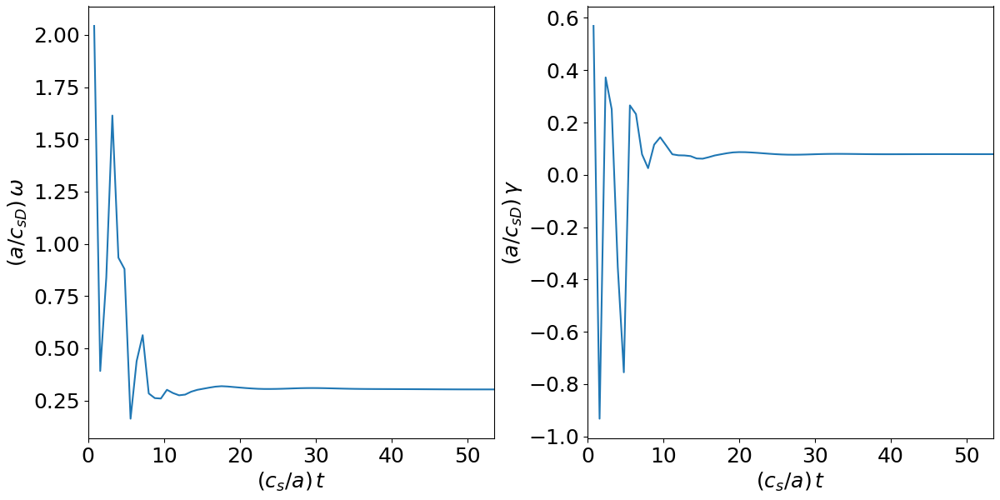
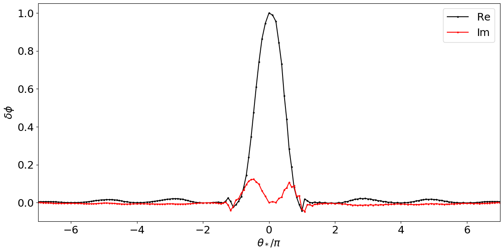

DIII-D #144977¶
Description¶
This H-mode discharge was part of a plasma current scan carried out at fixed toroidal field, plasma shape, and heating power. It was heated with 4.0W of NBI. Analysis was performed at 2.99 secs.
The major plasma parameters are Bt=2.1T, Ip=1.0MA, kappa=1.73, and delta(u,l)=(0.25,0.38). This discharge complements 144981 (1.5MA).

CGYRO¶
Linear run at r/a=0.75, ky=0.30:
Electrostatic, Miller equil., Suguma coll. model, n_species=2, n_theta=24, n_radial=8
Plot of gamma,omega vs time

Plot of phi vs theta

Publication¶
J.P. Floyd, et al., Phys. Plasmas 22, 022508 (2015).